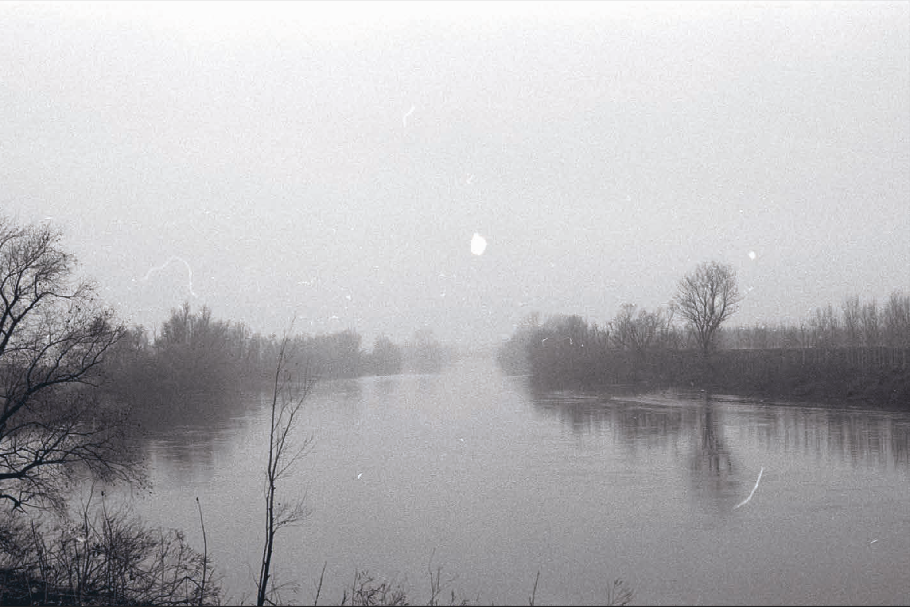
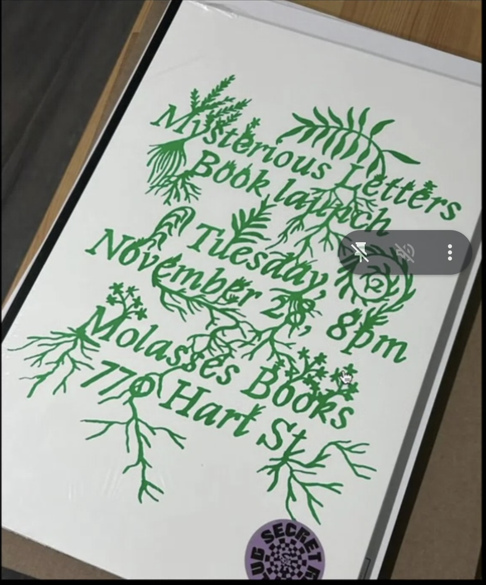
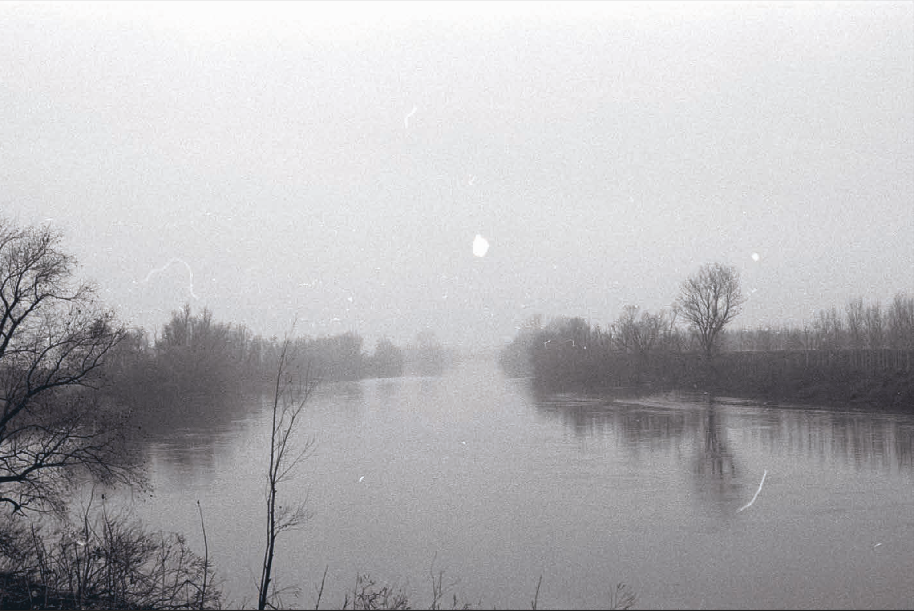
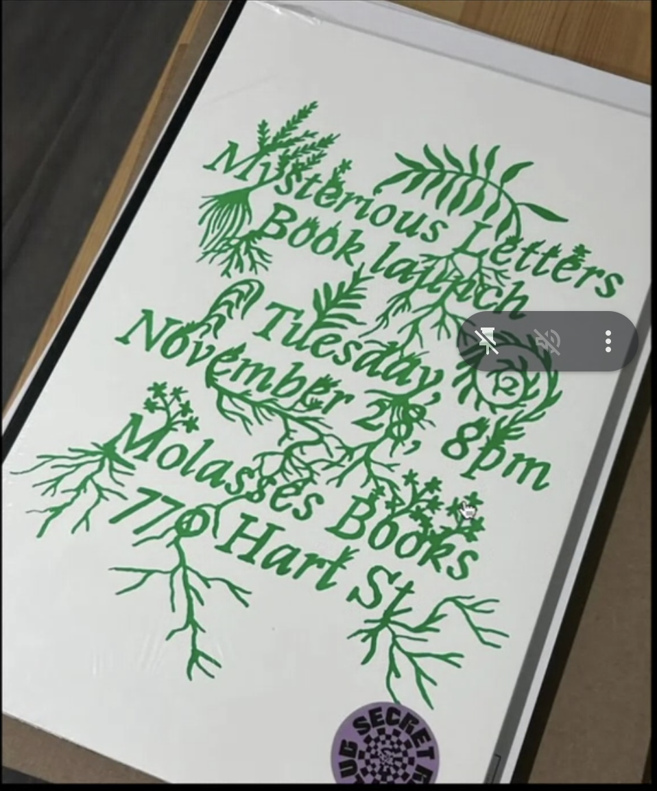

Weinlaube
Bietet über 90 Sitzplätze an. Sie sitzen an gediegenen, schweren Tischen und Bänken. Hier können Sie sich auch mit Gruppen anmelden und als Wanderer oder Biker sind Sie immer gern gesehene Gäste.
Im sommer, in der warmen Jahreszeit,
sitzt man bei uns in der Weinlaube auf der Terrasse unter einem grünen Dach von Reben. Die Weinlaube strahlt ein mediterranes Flair aus, und spendet angenehmen Schatten für gesellige Stunden im Freien.
Hier sind Sie und Ihre Freunde auch in sehr warmen Tagen bestens
»aufgehoben« und herzlich Willkommen. Und sollte es regnen, kein Problem, dann geht's rasch durch die Tür in unsere gemütliche Besenstube.
Unsere Weinlaube öffnen wir für Sie saisonal Bitte informieren Sie sich über unsere Webseite.
Dienstag bis Samstag
ab 12 Uhr bis 23 Uhr
Sonntag ab 12 Uhr bis 21 Uhr
Montag ist Ruhetag.
Besenstube
Im Winter - und sollte es regnen, kein Problem, geht's in unsere gemütliche Besenstube.
Die Stube bietet genug Platz und ist mit ca. 50-60 Sitzplätzen ausgestattet.
Voranmeldung ist möglich, Parkplätze für PKW und Busse am Haus.
Außerdem können Sie auch unsere Scheune von Mai bis September für Festlichkeiten, wie Polterabend, Hochzeit, Geburtstag, Firmenfest, usw. anmieten.
Scheune
Unsere Scheune direkt am Haus können Sie in der warmen Jahreszeit, gerne auch außerhalb der »Besenzeit«, von Mai bis September für Festlich- keiten wie Geburtstag, Polterabend, Hochzeit, Firmenfest, usw. anmieten.
Das Bild ist eine Fotomontage, die aus einer Fotografie eines bei uns stattgefundenen Scheunenfestes und einer Aufnahme unserer Scheune zusammengefürt wurde.
Terminanfragen wollen Sie bitte mittels unseres Kontaktformulares anfragen.

 


